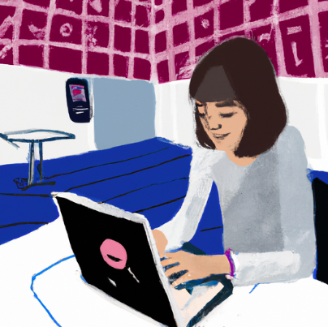

CÓMO DEBE SER LA REDACCIÓN DE NUESTROS TEXTOS EN SITE

Redactando un texto digital (Dominio público)
1. Claro y Conciso:
- Sé claro y conciso al expresar tus ideas. Evita frases muy largas y trata de explicar tus pensamientos de manera sencilla.
2. Oraciones Completas:
- Asegúrate de que cada oración tenga un sujeto (quién o qué) y un predicado (qué están haciendo o qué les está sucediendo).
3. Organización:
- Organiza tus ideas de manera lógica. Puedes utilizar subtítulos o enumeraciones para dividir tu contenido y facilitar su lectura.
4. Uso de Párrafos:
- Divide tu texto en párrafos cortos para hacerlo más legible. Cada párrafo debe centrarse en una idea específica.
5. Vocabulario Adecuado:
- Utiliza un vocabulario que sea comprensible para tu audiencia. Si usas palabras nuevas, asegúrate de explicar su significado.
6. Evita Repeticiones Excesivas:
- Intenta no repetir constantemente las mismas palabras. Si necesitas repetir algo, busca sinónimos para mantener el interés del lector.
7. Uso de Imágenes:
- Añade imágenes relacionadas con tu tema para hacer tu sitio más atractivo. Puedes etiquetarlas o describirlas brevemente.
8. Revisión y Corrección:
- Antes de publicar, revisa tu texto para corregir posibles errores de ortografía y gramática. Puedes pedir a un compañero o tu profesor que también lo revisen.
9. Historias Interesantes:
- Si estás escribiendo una historia, intenta hacerla interesante utilizando descripciones y diálogos que capturen la atención del lector.
10. Incluye Tu Opinión:
- Si estás escribiendo sobre algo que te gusta, no tengas miedo de incluir tu opinión. A la gente le gusta conocer tus pensamientos y sentimientos.
11. Pregunta a Otros:
- Después de escribir, pregunta a tus amigos o compañeros de clase qué piensan de tu texto. Sus comentarios pueden ser muy útiles.
Recuerda que la práctica hace al maestro. ¡Diviértete escribiendo y experimenta con diferentes estilos!